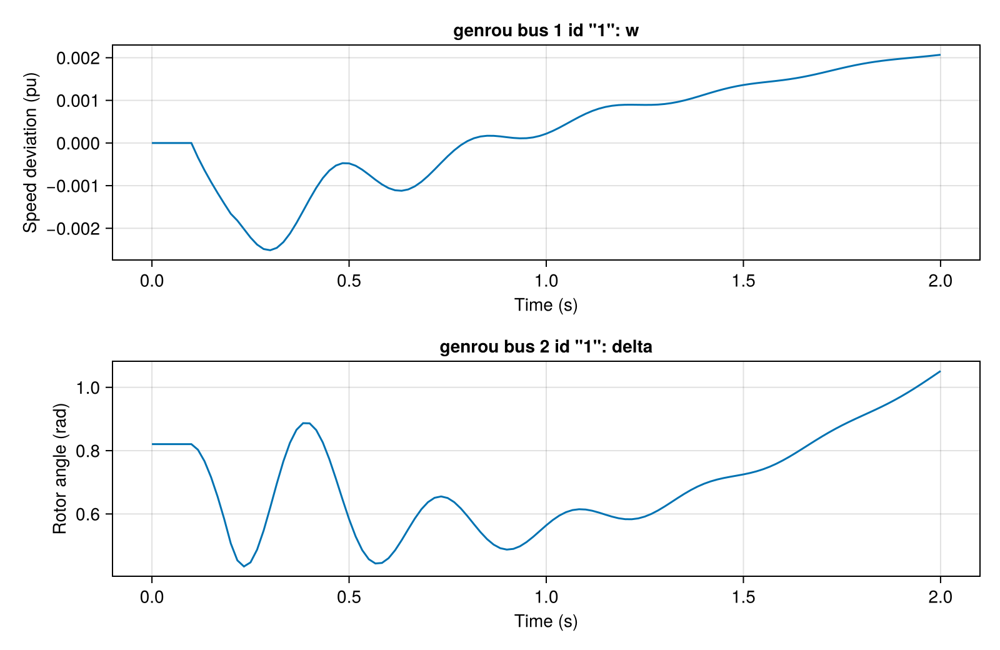
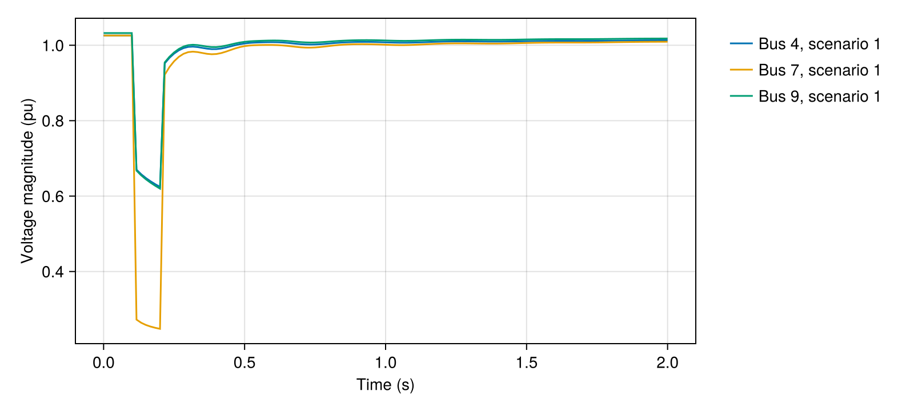
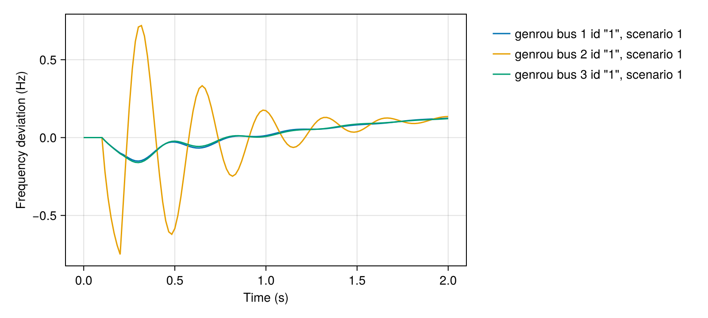
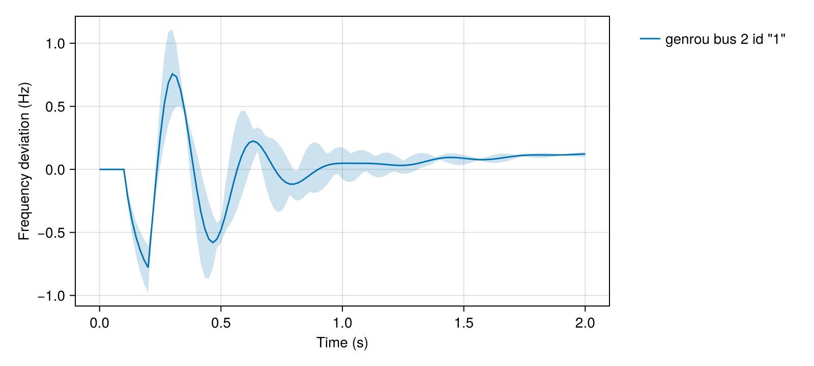
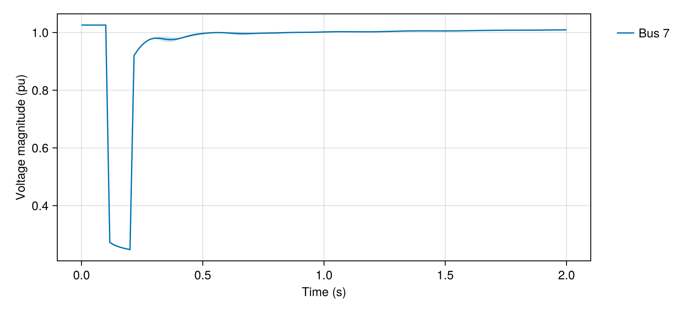
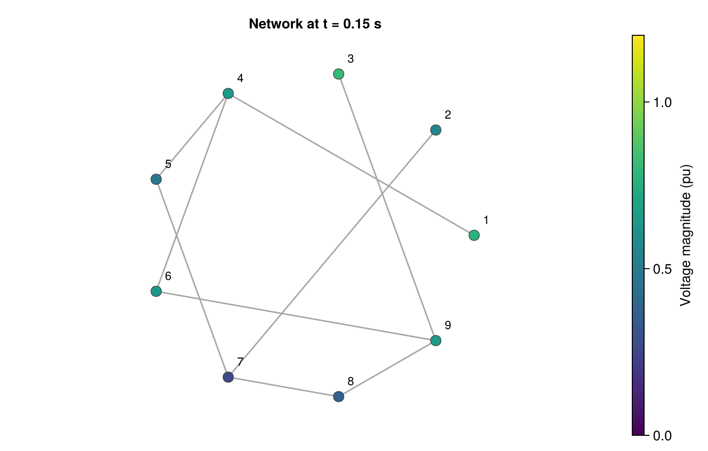
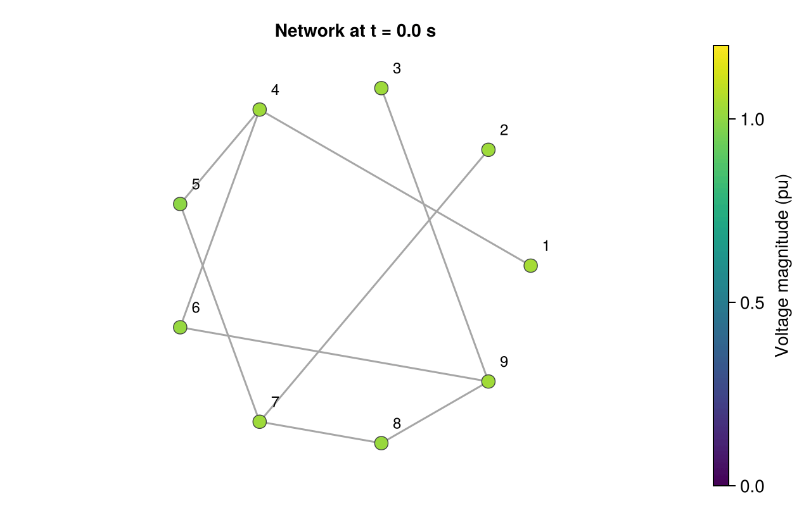

Plotting simulation results
GradPower's plotting API is an optional Makie extension. Install CairoMakie in your environment (pkg> add CairoMakie), then load it before or after GradPower. The examples use CairoMakie 0.15, which supplies Makie 0.24; the core simulator does not require Makie.
The plot_* functions return a Makie.Figure. Pass figure options through figure_kwargs=(; size=(800, 400)) and axis options through axis_kwargs=(; title="Study title"). Save a figure with CairoMakie.save.
For steady-state loading curves rather than time trajectories, use plot_cpf and animate_cpf; see the continuation manual.
Simulate a short fault
Use result=true to keep the channel identities alongside the trajectory. This bundled IEEE9 example records all states, with a fault at external bus 7 from 0.1 to 0.2 s:
using GradPower, CairoMakie
ex = joinpath(pkgdir(GradPower), "examples")
sys = from_psse(joinpath(ex, "ieee9_v33.raw"),
joinpath(ex, "ieee9bus_gov.dyr"))
build_network!(sys)
runpf!(sys)
dp = DynamicProblem(sys)
initialize_dynamics!(dp, sys)
add_event!(sys, ContingencyEvent(bus_index(sys, 7), 0.02, 0.1, 0.2))
res = integrate!(dp, sys, 2.0; result=true, save_every=2)All plotting bus selectors use external bus numbers. Generator identities are (external_bus, device_id), not generator ordinals or dynamic device indices. scenarios selects scenario IDs, not positions in the batch; the default is all scenarios. Pass a collection, even to select just one.
Named states
plot_states creates one axis per selected raw state. Select with a vector of (model, bus, id, name) tuples, or with recorded StateChannel objects from res.channels:
selectors = [(:genrou, 1, "1", :w), (:genrou, 2, "1", :delta)]
plot_states(res, selectors; figure_kwargs=(; size=(800, 520)))
For example, plot_states(res, [first(res.channels)]) uses channel metadata directly. State names retain their declared case. The values and units are those of the raw model states, without conversions; :w is speed deviation in pu, not absolute speed.
Voltage and speed
plot_voltage defaults to all recorded buses and voltage magnitude in pu. component=:real or :imag plots a rectangular component in pu; :angle plots radians. Magnitude and angle require both rectangular voltage rows.
plot_voltage(res; buses=[4, 7, 9], component=:magnitude,
figure_kwargs=(; size=(800, 360)))
plot_speed defaults to all recorded GENROU machines (model=:genrou). unit=:pu plots the raw speed deviation w. unit=:hz plots nominal_frequency * w: frequency deviation, not actual frequency in Hz. For a 50 Hz system, set nominal_frequency=50.0.
speed_figure = plot_speed(res; generators=[(1, "1"), (2, "1"), (3, "1")],
unit=:hz, nominal_frequency=60.0,
figure_kwargs=(; size=(800, 360)))
CairoMakie.save("ieee9-speed.png", speed_figure)
speed_figure
Scenario envelopes
Here three scenarios share the same fault schedule but use different inertia H on the machine at external bus 2. Reinitialize the base problem before copying it, since integration leaves its state at the final time. Inertia changes do not change this steady-state operating point.
initialize_dynamics!(dp, sys)
bl = GradPower.BatchedLayout(dp, sys, 3)
ih = parameter_index(sys, :genrou, 2, "1", :H)
for (m, factor) in enumerate((0.75, 1.0, 1.25))
bl.p[m, ih] *= factor
end
scenario_ids = ["lower inertia", "base inertia", "higher inertia"]
batch = GradPower.integrate_batched!(bl, sys, 2.0;
result=true, scenario_ids=scenario_ids, save_every=2)
plot_speed(batch; generators=[(2, "1")], scenarios=scenario_ids,
envelope=true, unit=:hz, nominal_frequency=60.0,
figure_kwargs=(; size=(800, 360)))
With envelope=true, each entity gets a pointwise minimum-to-maximum band and an arithmetic mean line across the selected scenarios. This is a scenario range, not a confidence interval. Voltage supports the same option:
plot_voltage(batch; buses=[7], scenarios=["lower inertia", "higher inertia"],
envelope=true, figure_kwargs=(; size=(800, 360)))
Use envelope=false (default) to see individual scenario traces. Omitting buses, generators, or scenarios selects all recorded entities or scenarios of that kind, not necessarily every entity in the original system.
Network snapshots
plot_network colors buses by voltage magnitude (quantity=:voltage, pu) or voltage angle (quantity=:angle, radians). With a result, the default is its final saved frame; scenario selects one scenario ID and defaults to the first. frame is a saved-sample index, not a time or integration step.
plot_network(sys, res; frame=argmin(abs.(res.times .- 0.15)),
quantity=:voltage, colorrange=(0.0, 1.2),
figure_kwargs=(; size=(720, 460)))
Without a result, plot_network(sys) uses the static power-flow voltages. The default layout is a deterministic circle ordered by external bus number. Supply positions=Dict(bus_number => (x, y), ...) to override it; include every bus in sys. labels=false hides bus labels, and colormap and colorrange control the bus colors.
Edges come from the branches in sys. The drawing does not infer outage status from a result or replay switching events. A circular layout is not geographic, and supplied coordinates do not make this an electrical one-line diagram. Use a system and result with matching bus identities.
Animate saved frames
animate_network writes an animation and returns its path. It uses one fixed color range across all selected frames; supply colorrange to compare multiple animations on the same scale. frames contains saved-frame indices only. framerate is a positive integer controlling playback frames per second, not physical simulation time; downsampling and irregular saved times affect the apparent speed.
This small GIF is generated during the documentation build:
animation_path = animate_network("ieee9-network.gif", sys, res;
frames=1:6:length(res.times), framerate=12,
quantity=:voltage, colorrange=(0.0, 1.2),
figure_kwargs=(; size=(640, 400)))
@assert isfile(animation_path)
For a batch, pass an ID such as scenario="base inertia" to either network function. Both also accept positions, labels, colormap, figure_kwargs, and axis_kwargs.
Selectively recorded results
Plots use only the rows in the SimulationResult. Missing requested states raise errors; they are never filled with zeros. Network plots require voltage data for every bus drawn, including both rectangular rows for magnitude or angle. Duplicate saved rows select the first copy, as in the result accessors. Keep the required rows when using save_idxs; see Recording and early stop.